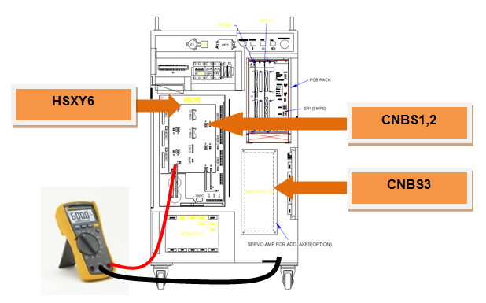
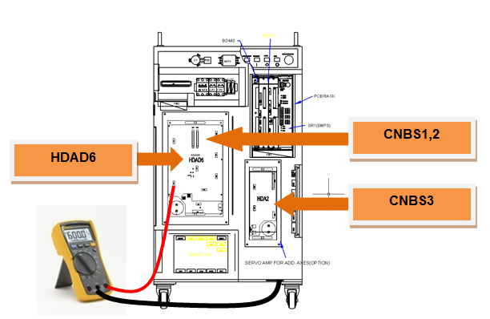
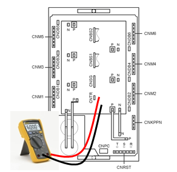
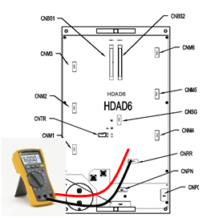

![ÅؽºÆ® »óÀÚ: < An error occurs non-periodically when the motor is turned on>
1. Examine the components that are related to the motor drive.
£±) Please examine the output cable that connects to the Servo drive unit.
£²) Please examine the terminal (socket) of the switching device in the Servo drive unit.
£³) Please replace the CNBS1, 2, and 3 cables and confirm the error.
£´) Please replace the Servo drive unit and confirm the error.
£µ) Please replace the Servo board (BD540/BD541) and confirm the error.
£¶) Please replace the Servo motor and confirm the error.
< An error occurs at a certain step >
2. Examine the robot at the step in which an error occurs.
£±) Please examine the robot's wiring at the location where the error occurs.
£²) Please reduce the speed of the robot's operation to confirm the error.
£³) Please make changes on the teached step's interpolation, and confirm the error.](images/image137.png)
1.1.16.1. Outline
A fault output has occurred from an intelligent power module (IPM)—a switch device inside the Servo drive unit that drives the motor. Or, a fuse is disconnected in the servo drive for small robots. IPM fault may occur due to an increased temperature of the heat sink, IPM's control voltage reduction, or an overcurrent output.
1.1.16.2. Causes and checking methods
1. Examine the components that are related to the motor drive.
The Servo drive unit that drives the motor receives a command from the Servo board (BD540/BD541) through the CNBS cable, and the current output of the internal amplification circuit will be transferred to the motor through wirings that are connected to each connector of the axis.
1) Examine the output cable that connects to the Servo drive unit
Examine the wirings that connect the Servo drive unit to the motor. Please turn off the power of the controller, remove the connector from the Servo drive unit, and measure the resistance value between the grounds to inspect the occurrence of short-circuit.

Figure 5.48 Examining the output cable of the Servo drive unit (Hi4a-0000 controller)

Figure 5.49 Examining the output cable of the Servo drive unit (Hi4a-0010/0012)
2) Examine the switch device of the Servo drive unit
The switch device of the Servo drive unit switches the direct current voltage that is supplied from the diode module and outputs the alternating current for each phase. If a short-circuit occurs at the internal terminal of the switch device, overcurrent will flow, and it will cause an IPM fault error. Please remove the connector and check if a short-circuit has occurred between the output terminal in the switch device of the Servo drive unit and the P (or N).
If a short-circuit exists, the Servo drive unit needs to be replaced, and the cable that connects the Servo drive unit to the motor needs to be examined.
Medium-size robot's Servo drive unit : HSXY6
Small-size robot's Servo drive unit : HDAD6

Figure 5.50 Short-circuit test on the switching device of HSXY6

Figure 5.51 Short-circuit test on the switching device of HDAD6
3) Replacement of the CNBS cable and examination of the error
The Servo drive unit that drives the motor receives a command from the Servo board (BD540/BD541) through the CNBS cable, and the current output of the internal amplification circuit will be transferred to the motor through wirings that are connected to each connector of the axis.
If the error does not persist after the replacement of the cable, the cable is faulty. Please replace the CNBS cable with a new one.
4) Replacement and examination of the Servo board (BD540/BD541)
If the error does not persist after the replacement of the Servo board (BD540/BD541), the Servo board is faulty. Please replace the Servo board with a new one.
5) Replacement and inspection of servo drive unit
If the error does not persist after the replacement of the Servo drive unit, the Servo drive unit is faulty. Please replace the Servo drive unit with a new one.
Medium-size robot's Servo drive unit : HSXY6
Small-size robot's Servo drive unit : HDAD6
6) Replacement and examination of the Servo motor
If the error does not persist after the replacement of the Servo motor, the Servo motor is faulty. Please replace the Servo motor with a new one.
2. Examine the robot at the step in which an error occurs.
If an IPM fault error occurs at a certain step, it may occur when the device wiring has been damaged at the teached step or the axis speed changed significantly when the teached program changes the position.
1) Examine the internal wiring at the location of an error.
Examine the wiring status of the corresponding axis that is connected to the motor (inside of the robot). During the examination, please turn off the controller's power, and remove the output connector from the Servo drive unit. After that, please measure the resistance value between the grounds of each phase (cable side) to test for a short-circuit.
2) Reduce the speed of the robot's operation to confirm the error
If an error occurs at the step that generates rapid changes in the axis speed, which are caused by the position changes of the robot, reduce the operation speed to confirm the error. If the error does not persist after the speed is reduced, please change the teach speed of the corresponding step, and record the job program to use.
3) Change the teached step's interpolation to confirm the error.
If the axis speed changes rapidly even after the operation speed is reduced by 75%, please change the teached step's interpolation to "P" and confirm the error. If the changes on interpolation resolve the error (at the same operation speed), please modify the teach.